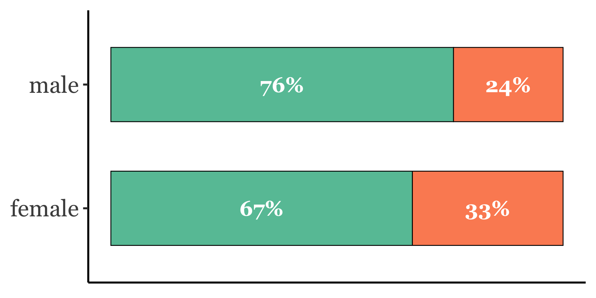

| Speaker | Annotation |
|---|---|
| Interviewer | This is Daniel Carrillo. Today is July 2nd, 2024, and I'm here in Del Rio, Texas for an interview with one of our community members. Before we begin, I'd like to get verbal consent for the form that we went over. |
| Participant | uh, customs, that kind of stuff right now, today. |
| Interviewer | What would you say are the strengths of this community? |
| Participant | [LONG PAUSE] I think the people who started it had to be strong and resilient. Uh, I hope it continues that way. I wish more I wish more people like [INTERVIEWER NAME] would stay here. |
| Interviewer | Um, what would you say are some of the benefits of living in this community? |
| Participant | It's kind of- you can make the kind. It's a good lifestyle if you make it that way. Uh, you have a chance. You don't have the crime isn't that bad. If you watch where you're going. Uh, it's getting worse, so, with what's going on in the border. Uh, the education system, it's there if you want it. If you want to be a student, you can be one. If you don't, it won't be there for you. Uh, the people [THUMP OUTSIDE]? That's- |
Co-constructing CRINGE
Ambivalent Affect Elicitation and Vernacular Styles
in Dialectological Fieldwork
Lars Hinrichs ![]()
The University of Texas at Austin
July 2025
Overview
Outline
DelRio_DC_07022024
CRINGE
CRINGE in interaction
CRINGE as a phatic device
Phaticity and the sociolinguistic interview
- Interview as key data elicitation method in dialectology and sociolinguistics
- Observer’s paradox (Labov 1972)
- DoD question (ibid.)
Critiques of the DoD question
- …
- …
- Sneller & Barnard suggest drawing on pop-cultural context for chatty questions
CRINGE talk phaticity
Evidence that CT can engender phatic communion:
[literature]
Phatic communion, CA, and DA
Some definitions
Research questions
- Can a question aimed at eliciting CT effectively replace the DoD question in sociolinguistic interviews?
- If not, why?
Data and Methods
Home to Texas (H2TX)
(video)
H2TX 2024 interviews
- map
- rural/urban
- gender
- ethnicity
Interview protocol
3-part structure
introduce Place Talk (PT)
[CLIP with characteristic elicitation, e.g. Midlothian]
Key question: story about someone else… CT elicitation
[CLIP of somewhere that it worked]
Method
- DA
- Content analysis
right column:
- Did participant answer “yes” or “no”?
- If “yes”, did they offer a story?
- If “no”, was any context provided?
- Can we muster any explanation for the non-success cases?



Response subtypes
Yes
- Specific story
- General confirmation
- Pattern confirmation
- Humorous confirmation
- Confirmed but witheld
- Language assumption: Eagle Pass
No
“If I’ve got something to say to you…” - female, African American, Beaumont
“I respect everybody” - female, Hispanic, Donna
stonewalling “no” [CLIP] - our problem is of course that students need to learn how to follow up
claiming that memory failed them - combining refusal to answer with social geniality [CLIP]
other…?
Conservative
Self-Positioning
Cultural conservatism
- CRINGE
-
A pop-culturally grounded concept.
- Cultural conservatism
-
Negatively predicts the effectiveness of CT phaticity.
- Political conservatism
- Explicit alignment with a political party/movement.
VIZ: explicit political self-positioning
VIZ: conservatism by evaluation of change (i.e. discourse-analytically deduced from place talk sections of interviews)
VIZ: conservatism crossed with outcome, especially types of “no”
VIZ: conservatism by rurality
VIZ: conservatism by hispanicity
Coding for culturally conservative positioning in the data
- You might look at the pop music question [CLIP Pflugerville example] as a bellwether, but actually, that does not seem to be a good predictor [CLIP Pflugerville CT question]
- The elicitation of PT as key interview passage: coded for characterization and evaluation of change in the community
- [CLIP positive change, CLIP negative change]
- Broad scan for political self-positioning in discourse of any kind (but note the above caveat)
- [CLIP left-leaning, CLIP right-leaning]
Key takeaways
- Train students more deeply, specifically in the art of follow-up questions
- Take into account that CT makes participants uncomfortable, and it doesn’t land in too many cases
- Focus on more PT instead of CT
- Test CT elicitation again in a year when we request younger participants (2026?), and combine with other questions designed to elicit CT
Conclusion
Like the DoD question before it, CT elicitation has been shown not to be a silver bullet in the sociolinguistic interview. The most important lesson for interviewers who choose to ask questions with pop-cultural resonance is to keep the likely pop-cultural knowledge of their participants in mind.

Lars Hinrichs | UEBER CRINGE | Heidelberg 2025